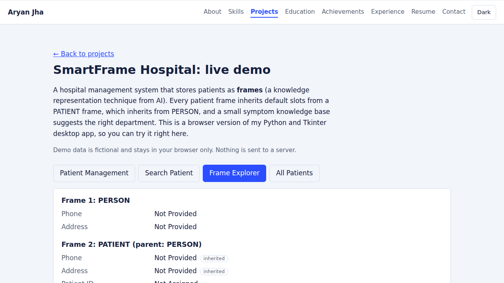

Aryan_Scan
A webtoon and manga reading site with search, separate manga and manhwa sections, and titles that open on click.
HTML, CSS, JavaScript
A webtoon and manga reading site with search, separate manga and manhwa sections, and titles that open on click.
HTML, CSS, JavaScript

A hospital management system built on frame-based knowledge representation. Patient frames inherit default slots from PATIENT and PERSON frames, and a symptom knowledge base suggests the right department. Includes patient records, search, and a frame explorer.
Python, Tkinter, SQLite, JavaScript (web demo)